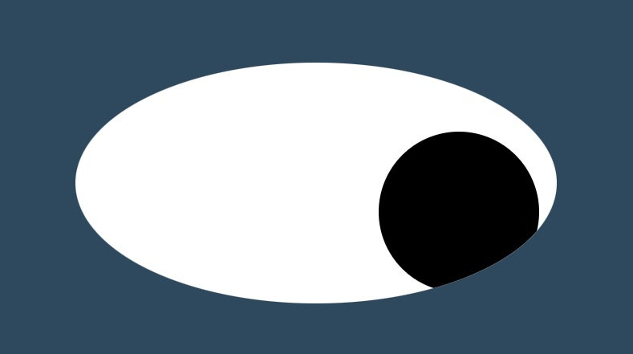

PacMen Exercise
Press a button to add Pacmen to the screen and watch them bounce around. I was even able to make the Pacmen chomp and turn around.

Eye Exercise
Using HTML, CSS, and Javascript, the eyes follow the cursor around the screen.
Real Time Bus Tracker
Using real time data for Boston's route 1, this project let's you watch the buses travel the city. Each bus has a different color marker and updates every 15 seconds.